프로젝트 개요
GovBiz는 정부지원사업 탐색부터 신청 준비까지 연결하는 AI 서비스입니다. 여러 기관에 흩어진 공고를 모아, 기업의 조건과 목적에 맞는 사업을 찾고 신청 준비와 진행 상황까지 관리할 수 있도록 돕습니다.
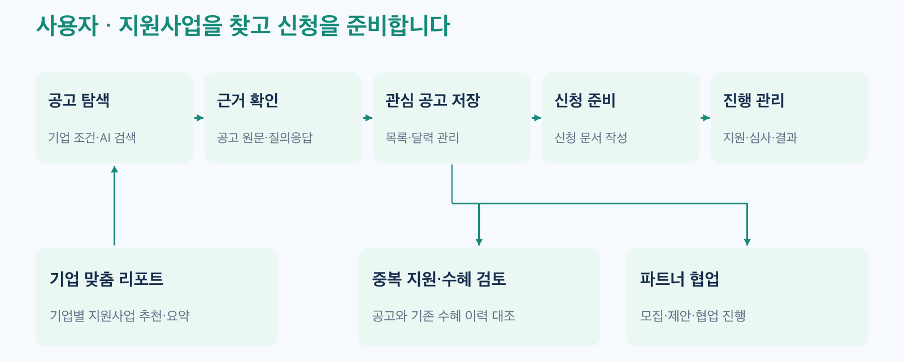
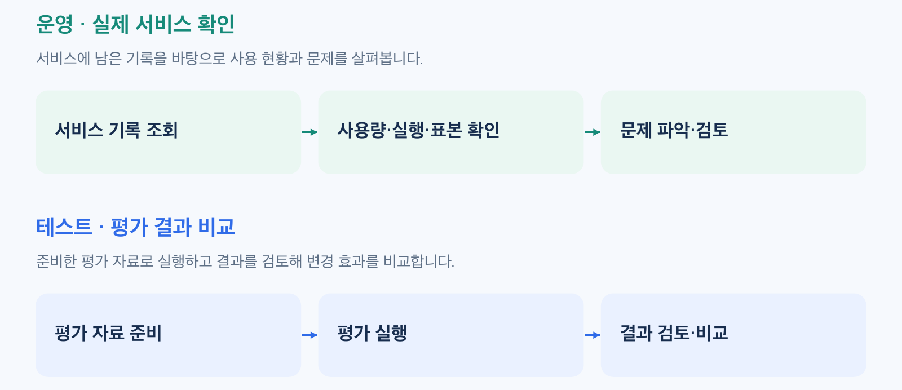
이전 프로젝트: Ai Agent 를 활용한 정부지원사업 탐색·신청 관리 플랫폼
시스템 아키텍처
PDF의 구조도를 접속 → 서비스·데이터 → 평가·관측 → 서버 배치 → 외부 통신 → 빌드 → 배포 순서로 살펴봅니다. 세부 설정은 각 그림 아래에서 펼쳐 볼 수 있습니다.
01. 접속 경로 — 웹·앱에서 백엔드까지
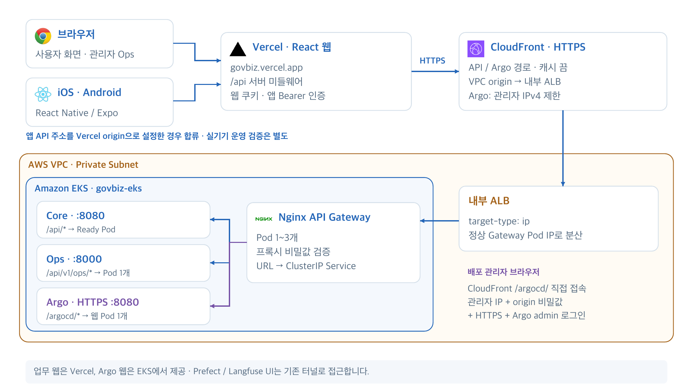
웹·앱의 요청은 인증과 프록시 경로를 거쳐 Gateway에 도착하고, URL에 따라 Core·Ops 등 내부 서비스로 전달됩니다. Argo CD 관리 화면은 별도의 관리자 접속 경로를 사용합니다.
접속·인증 설정 펼쳐 보기
| 구성 요소 | 세부 설정·역할 |
|---|---|
| 브라우저 | 사용자 화면 · 관리자 Ops |
| iOS · Android | React Native / Expo |
| Vercel · React 웹 | govbiz.vercel.app · /api 서버 미들웨어 · 웹 쿠키 · 앱 Bearer 인증 |
| CloudFront | API / Argo 경로: 캐시 끔 · VPC origin → 내부 ALB · Argo 접속: 관리자 IPv4 제한 |
| 내부 ALB | target-type: ip · 정상 Gateway Pod IP로 분산 |
| Nginx API Gateway | EKS · govbiz-eks / Pod 1~3개 · 프록시 비밀값 검증 · URL → ClusterIP Service |
| Core · :8080 | /api/* · → Ready Pod |
| Ops · :8000 | /api/v1/ops/* · → Pod 1개 |
| Argo · :8080 | HTTPS · /argocd/* · → 웹 Pod 1개 |
| 배포 관리자 접속 | 관리자 브라우저 → CloudFront /argocd/ 직접 접속 · 관리자 IP + origin 비밀값 + HTTPS + Argo admin 로그인 |
앱의 Vercel 경로는 API 주소 설정에 따라 합류합니다. 실기기 운영 검증은 별도입니다.
02. 서비스·데이터 — 업무를 처리하고 저장하는 방식
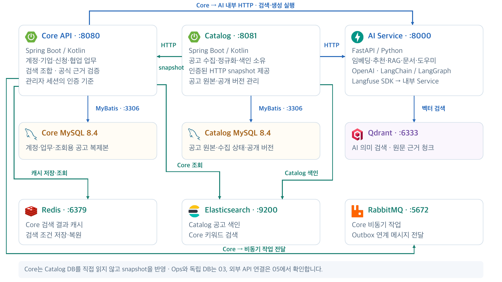
Core는 사용자 업무와 검색 조합, Catalog는 공고 수집·정규화·색인, AI는 검색·생성을 담당합니다. 각 서비스는 역할에 맞는 저장소를 사용하며, Core는 Catalog의 공고 snapshot을 자신의 조회용 데이터에 반영합니다.
서비스·저장소 설정 펼쳐 보기
| 구성 요소 | 세부 설정·역할 |
|---|---|
| Core API · :8080 | Spring Boot / Kotlin · 계정·기업·신청·협업 업무 · 검색 조합 · 공식 근거 검증 · 관리자 세션의 인증 기준 |
| Catalog · :8081 | Spring Boot / Kotlin · 공고 수집·정규화·색인 · 원본·공개 버전 관리 · 인증된 HTTP snapshot 제공 |
| AI Service · :8000 | FastAPI / Python · 임베딩·추천·RAG·문서·도우미 · OpenAI · LangChain · LangGraph · Langfuse SDK |
| Core → MySQL 8.4 | MyBatis · :3306 · 계정·업무·조회용 공고 복제본 |
| Catalog → MySQL 8.4 | MyBatis · :3306 · 원본·수집 상태·공개 버전 |
| AI → Qdrant · :6333 | 의미 검색 · 원문 근거 청크 |
| Core → Redis · :6379 | 검색 결과 캐시 · 검색 조건 저장·복원 |
| Elasticsearch · :9200 | Catalog → 공고 색인 · Core → 키워드 검색 |
| Core → RabbitMQ | 포트 :5672 · 비동기 작업 · Outbox 연계 메시지 전달 |
Catalog → Core: HTTP snapshot 전달 · Catalog → AI: 내부 HTTP 호출 · Core → AI: 검색·생성 실행 · AI 내부 Service → Langfuse SDK: 추적 기록
03. 평가·관측 — 실행 기록과 평가 결과의 연결
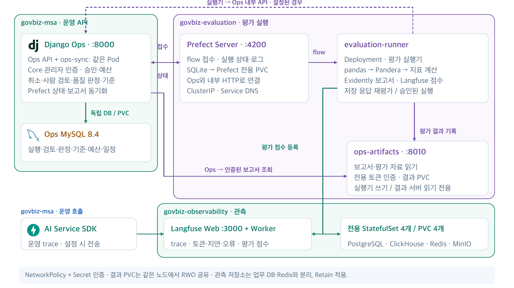
AI → Langfuse는 실행 추적 기록 전송, 평가 실행기 → Langfuse는 평가 점수 등록입니다. 일반 사용자의 AI 실행을 기록하는 것과 평가 점수를 계산하는 것은 별도 경로입니다.
평가 실행기는 결과 파일도 저장합니다. Ops는 결과 서버에서 보고서를 읽고 검증해 실행 요약·비교 결과를 저장하며, React 운영 화면은 Ops API에서 이 결과를 받아 표시합니다.
평가·관측 설정 펼쳐 보기
| 구성 요소 | 세부 설정·역할 |
|---|---|
| Django Ops · :8000 | govbiz-msa / Ops API + ops-sync: 같은 Pod · Core 관리자 인증 · 승인·예산·취소 · 사람 검토·품질 판정·기준 · Prefect 상태·보고서 동기화 · 저장 → Ops MySQL 8.4 (독립 DB / PVC) · 저장 항목: 실행·검토·판정·기준·예산·일정 |
| Prefect Server · :4200 | govbiz-evaluation / ClusterIP · Service DNS · flow 접수 · 실행 상태·로그 · SQLite → Prefect 전용 PVC · Ops와 내부 HTTP로 연결 |
| evaluation-runner | Deployment · 평가 실행기 · pandas → Pandera → 지표 계산 · Evidently 보고서 · Langfuse 점수 · 저장 응답 재평가 / 승인된 실행 |
| ops-artifacts · :8010 | 평가 자료·보고서 / 결과 PVC · 실행기 쓰기 · 결과 서버 읽기 전용 · 전용 토큰 인증 |
| Langfuse | 평가 점수 등록 · 운영 trace와 함께 확인 |
| AI Service SDK | govbiz-msa / 운영 trace · 설정 시 전송 |
| Langfuse Web :3000 + Worker | govbiz-observability · 운영 trace와 평가 점수 관리 |
| 관측 저장소 | PostgreSQL · ClickHouse · Redis · MinIO · 업무 DB·Redis와 별도 관리 |
Ops → ops-artifacts: 인증된 보고서 조회 · 실행기 → Ops 내부 API: 설정된 경우에 호출
04. 서버 배치 — Pod를 배치하고 확장하는 방식
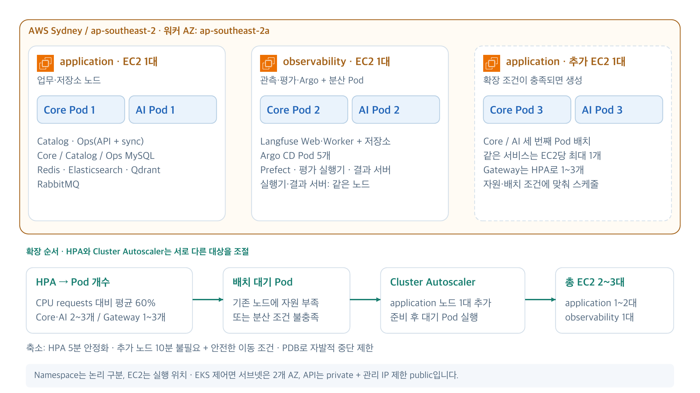
업무·저장소와 관측·평가 구성 요소의 실행 위치를 나누고, Core·AI Pod를 서버에 분산합니다. HPA는 Pod 수를, 노드 확장은 부족한 실행 자원을 조절합니다.
노드·확장 설정 펼쳐 보기
| 구성 요소 | 세부 설정·역할 |
|---|---|
| application · EC2 1대 | 업무·저장소 노드 · Core Pod 1 · AI Pod 1 · Catalog · Ops(API + sync) · Core / Catalog / Ops MySQL · Redis · Elasticsearch · Qdrant · RabbitMQ |
| observability · EC2 1대 | 관측·평가·Argo + 분산 Pod · Core Pod 2 · AI Pod 2 · Langfuse Web·Worker·저장소 · Argo CD Pod 5개 · Prefect · 평가 실행기 · 결과 서버 |
| HPA → Pod 개수 조절 | CPU requests 대비 평균 60% · Core·AI: 2~3개 / Gateway: 1~3개 |
| 배치 대기 Pod | 자원이 부족하거나 분산 조건을 만족하지 못함 |
| application · EC2 1대 추가 | Core Pod 3 · AI Pod 3 배치 · 같은 서비스는 EC2당 최대 1개 · 자원·배치 조건에 맞춰 스케줄 · 전체 EC2: 기본 2대 · 최대 3대 |
| 안전하게 줄이는 조건 | HPA: 5분 안정화 · 추가 노드: 10분 불필요 + 안전한 이동 조건 · PDB: 자발적 중단 제한 |
평가 실행기와 결과 서버는 같은 노드에 배치합니다. Namespace는 논리 구분이고 EC2는 실행 위치입니다.
05. 외부 통신·저장소 — 외부 API와 영속 데이터
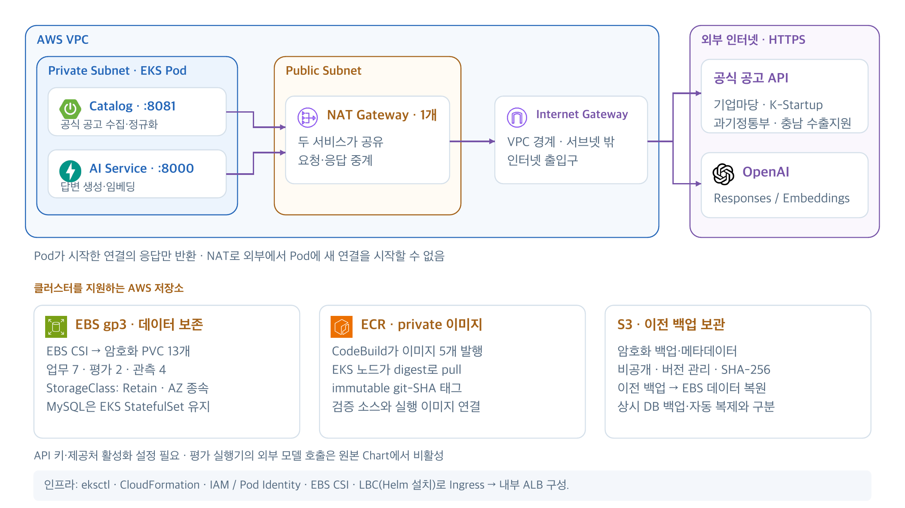
비공개 네트워크의 Pod가 NAT Gateway를 통해 외부 공고 API와 OpenAI에 요청합니다. 데이터는 EBS 볼륨에 보존하며, ECR은 실행 이미지, S3는 이전 백업 보관에 사용합니다.
외부 통신·저장소 설정 펼쳐 보기
| 구성 요소 | 세부 설정·역할 |
|---|---|
| Private Subnet · EKS Pod | Catalog :8081 → 공식 공고 수집·정규화 · AI Service :8000 → 답변 생성·임베딩 |
| NAT Gateway · 1개 | Public Subnet / 요청·응답 중계 |
| Internet Gateway | 서브넷 밖의 VPC 경계 · 인터넷 출입구 |
| 공식 공고 API | 기업마당 · K-Startup · 과기정통부 · 충남 수출지원 |
| OpenAI | Responses · Embeddings |
| EBS gp3 · 데이터 보존 | EBS CSI → 암호화 PVC 13개 · 업무 7 · 평가 2 · 관측 4 · StorageClass: Retain · AZ 종속 · MySQL은 EKS StatefulSet 유지 |
| ECR · private 이미지 | CodeBuild가 이미지 5개 발행 · EKS 노드가 digest로 pull · immutable git-SHA 태그 · 검증 소스와 실행 이미지 연결 |
| S3 · 이전 백업 보관 | 암호화 백업·메타데이터 · 비공개 · 버전 관리 · SHA-256 · 이전 백업 → EBS 데이터 복원 · 상시 DB 백업·자동 복제와 구분 |
Pod가 시작한 연결의 응답만 반환합니다. NAT를 통해 외부에서 Pod로 새 연결을 시작할 수 없습니다.
API 키·제공처 활성화 설정이 필요합니다. 평가 실행기의 외부 모델 호출은 원본 Chart에서 비활성입니다.
06. 빌드·발행 — 코드에서 이미지와 배포 파일까지
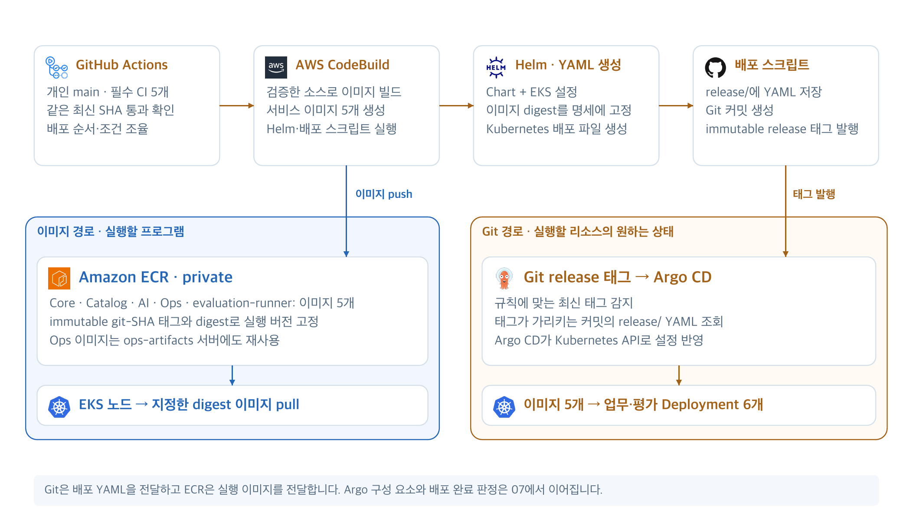
동일 소스 커밋의 필수 CI를 확인한 후 이미지를 빌드하고 ECR에 발행합니다. Helm으로 생성한 배포 파일에는 이미지 digest를 고정하고, Git의 release 경로와 태그로 배포할 상태를 관리합니다.
빌드·발행 설정 펼쳐 보기
| 구성 요소 | 세부 설정·역할 |
|---|---|
| GitHub Actions | 개인 main · 필수 CI 5개 · 같은 최신 SHA 통과 확인 · 배포 순서·조건 조율 |
| AWS CodeBuild | 서비스 이미지 5개 빌드 · Helm·배포 스크립트 실행 |
| 이미지 경로 | 실행할 프로그램 |
| Git 경로 | 원하는 리소스 상태 |
| Amazon ECR · private | Core · Catalog · AI · Ops · evaluation-runner · immutable git-SHA 태그 · digest로 실행 버전 고정 · Ops 이미지는 결과 서버에도 재사용 |
| Helm · YAML 생성 | Chart + EKS 설정 · 이미지 digest를 명세에 고정 · Kubernetes 배포 파일 생성 |
| EKS 노드 | ECR → 지정한 digest의 · 실행 이미지 pull |
| 배포 스크립트 | release/에 YAML 저장 · Git 커밋 생성 · immutable release 태그 발행 |
| 실제 실행 대상 | 이미지 5개를 사용해 · 업무·평가 Deployment 6개 실행 |
| Git 태그 → Argo CD | 규칙에 맞는 최신 태그 감지 · 태그 커밋의 release/ YAML 조회 · Kubernetes API로 설정 반영 |
07. GitOps 배포 — 변경 반영과 실행 상태 검증
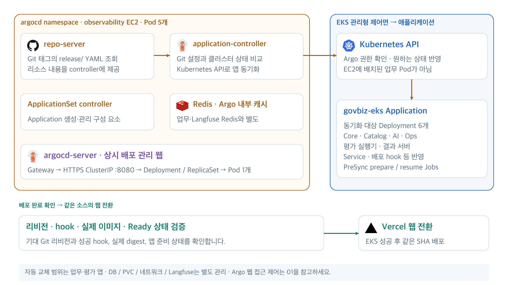
Argo CD는 Git의 배포 설정과 클러스터 상태를 비교해 Kubernetes API에 반영합니다. 배포 후에는 Git 리비전·hook·이미지 digest·Ready 상태를 확인하고 웹도 같은 소스 버전으로 전환합니다.
Argo·배포 검증 설정 펼쳐 보기
| 구성 요소 | 세부 설정·역할 |
|---|---|
| repo-server | Git 태그의 release/ YAML 조회 · 리소스 내용을 controller에 제공 |
| application-controller | Git 설정과 클러스터 상태 비교 · Kubernetes API로 앱 동기화 |
| Kubernetes API | Argo 권한 확인 · 원하는 상태 반영 · EC2에 배치된 업무 Pod가 아님 |
| govbiz-eks Application | 동기화 대상 Deployment 6개 · Core · Catalog · AI · Ops · 평가 실행기 · 결과 서버 · Service · 배포 hook 등 반영 · PreSync prepare / resume Jobs |
| ApplicationSet controller | Application 생성·관리 |
| Redis · Argo 내부 캐시 | 업무·Langfuse Redis와 별도 |
| argocd-server · 상시 배포 관리 웹 | Gateway → HTTPS ClusterIP :8080 · → Deployment / ReplicaSet → Pod 1개 |
| 리비전·hook·이미지·Ready 검증 | 기대 Git 리비전 · 성공한 hook · 실제 image digest · 앱 준비 상태 확인 |
| Vercel 웹 전환 | 같은 소스 SHA로 배포 |

아래 기술별 설명에서는 에이전트·평가 정책·배포 검증·공유 코드의 구현을 자세히 살펴봅니다.
1. 사용자 의도에 따라 업무를 연결하는 LLM 기반 라우팅
자연어 요청을 기존 업무 기능으로 연결
“사업을 찾아줘”, “이 공고의 제출 서류가 뭐야?”, “신청서를 준비하고 싶어”를 같은 대화에서 요청할 수 있도록 LLM이 업무를 선택하고 Core가 실행 조건을 검증하게 했습니다.
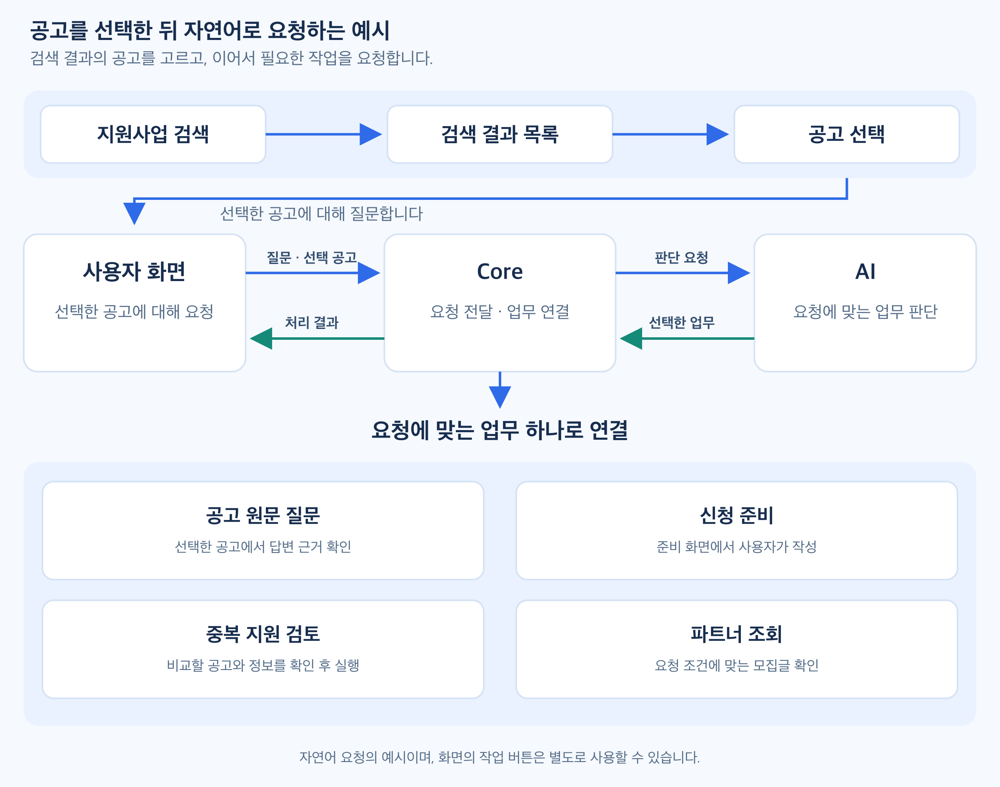
- AI의 역할: 한 턴에 하나의 action을 선택하고 구조화된 결과를 반환합니다.
- Core의 역할: 현재 관리자 권한, 조건, 사용자가 선택한 공고를 검증한 뒤 기존 기능에 연결합니다.
- 사용자의 역할: 검색 조건을 확인하거나 문서·검토 화면에서 후속 실행을 요청합니다.
실제 화면: 대화에서 확인하고 작업 화면으로 이동


선택 공고로 질문·작업 요청

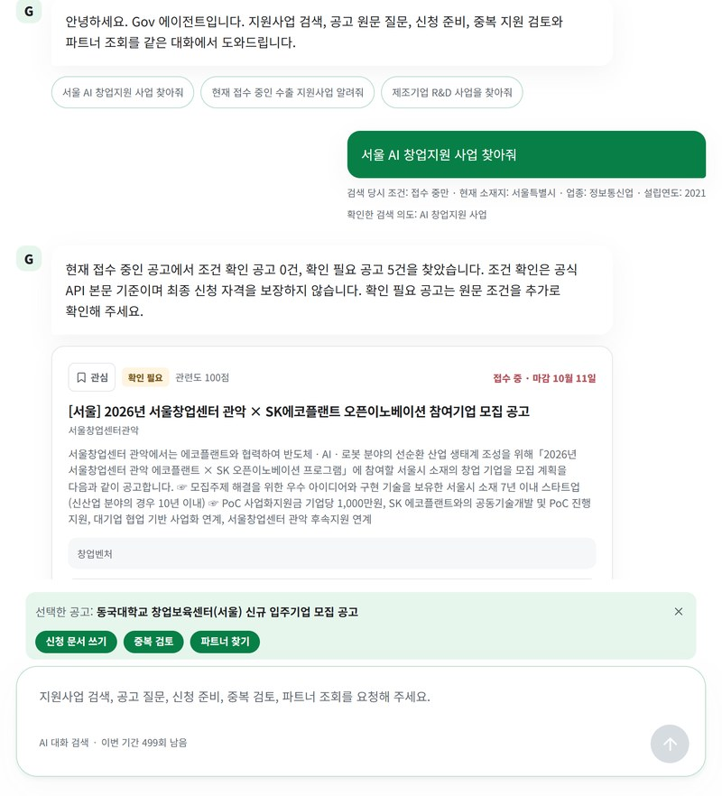
입력창 위의 선택한 공고를 확인한 뒤 질문하거나 작업 버튼을 누릅니다. 공고 원문 질문과 신청서 준비는 공고 선택이 필요합니다.
선택 상태를 보여주는 예시로, 앞뒤 화면과 선택된 공고가 다릅니다.
업무별 작업 카드

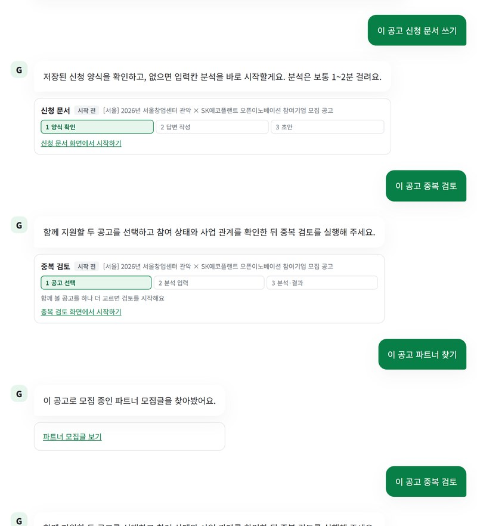
선택한 공고에 대한 요청이나 작업 버튼으로 후속 작업을 연결합니다. 이 화면은 작업 버튼으로 만든 카드 예시입니다.
중복 검토 화면
카드에서 검토 화면을 열고, 비교할 공고와 검토 정보를 확인합니다.
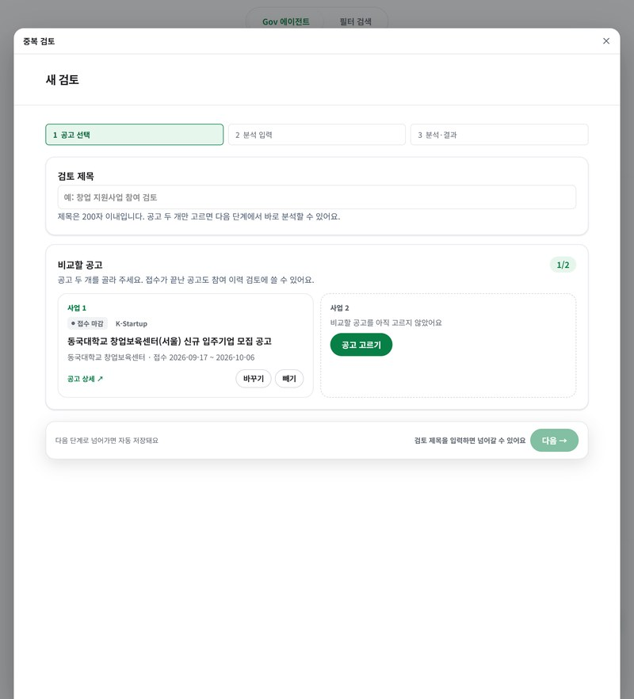
AI가 외부 제출·저장·삭제를 임의로 시작하지 않습니다. 사용자가 작업 화면에서 후속 실행을 요청합니다.
2026년 10월 15일 로컬 웹에서 저장된 대화를 다시 열어 촬영한 기능 예시입니다. 각 화면은 하나의 연속 모델 실행을 의미하지 않습니다.
구현 근거: Supervisor · Core 실행 경계 · 원본 화면·촬영 조건
2. 평가·추적·실행 관리 체계인 LLMOps
모델을 바꾼 효과를 같은 조건에서 비교
React는 운영 화면, Django Ops는 정책·권한·이력, Prefect는 별도 평가 실행을 담당합니다. Langfuse는 기록된 실행을 추적하고, Evidently는 평가 결과를 비교합니다.
pandas로 데이터를 정리하고 Pandera로 형식을 검증한 뒤 지표를 계산합니다. Langfuse의 호출 추적은 실행 중에도 수집하며, 보고서와 평가 점수 등록은 별도로 처리합니다.
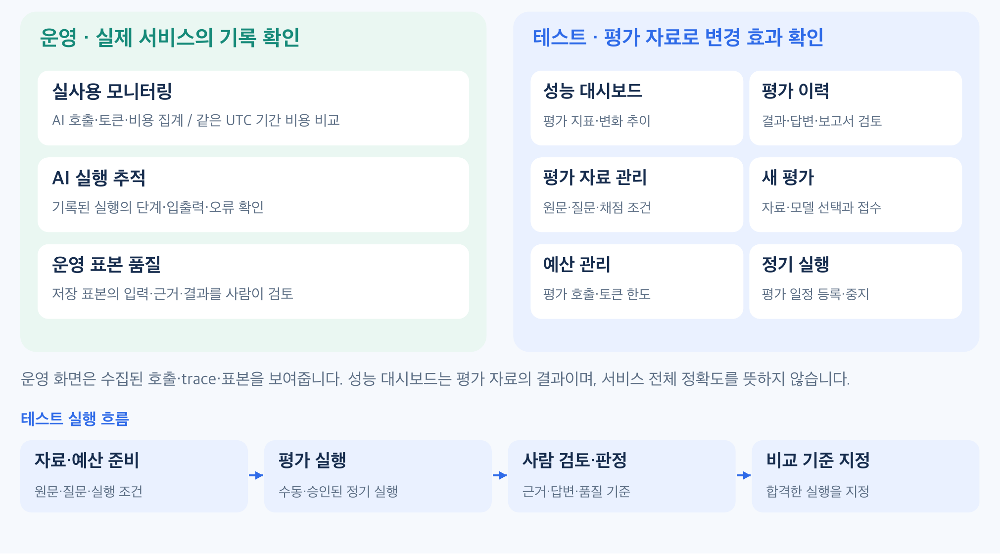
운영 3개: 실사용 모니터링에서 호출·토큰·비용을, AI 실행 추적에서 단계·입출력·오류를 확인합니다. 운영 표본 품질에서는 공고 답변·도우미·검색·문서 생성·중복 검토의 저장 표본을 사람이 검토합니다.
테스트 6개: 평가 자료 관리·새 평가·평가 이력으로 실행과 검토를 관리하고, 성능 대시보드에서 같은 조건의 지표를 비교합니다. 예산 관리는 평가 호출·토큰 한도에, 정기 실행은 평가 일정 등록·중지에 적용됩니다.
테스트 실행 절차: 자료·대상·예산 준비 → 실행 접수 → 근거·답변 검토 → 품질 판정 → 합격 후 비교 기준 지정.
성능 대시보드는 평가 자료 범위의 결과이며, 운영 표본 품질은 저장된 표본의 검토 결과입니다. 서비스 전체 정확도로 해석하지 않습니다. 검토 요건을 갖춘 상세 공고 답변은 회귀 후보로 내보낼 수 있지만, 평가 자료 편입은 별도 검토가 필요합니다.
구현 기준: 운영·테스트 메뉴 정의 · 운영 화면 기능·측정 범위
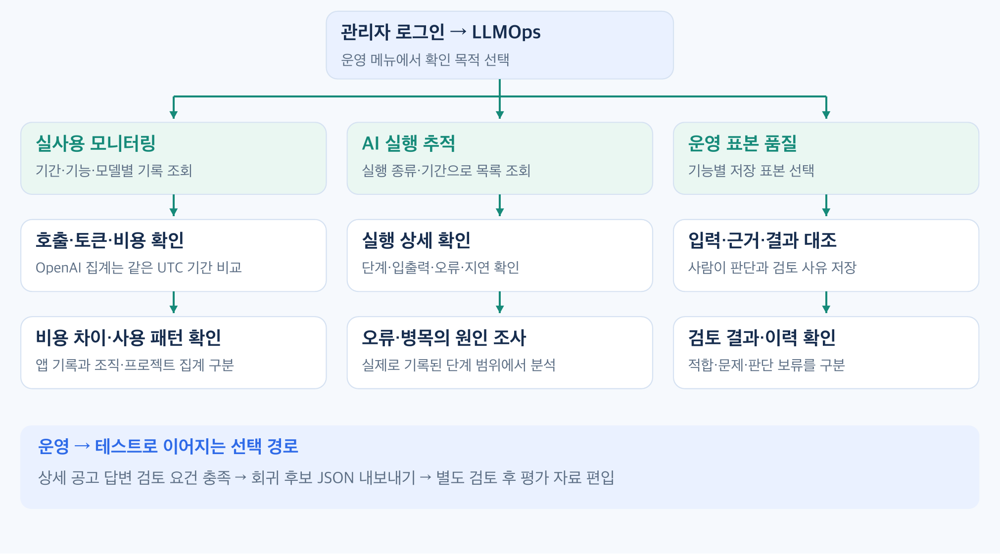
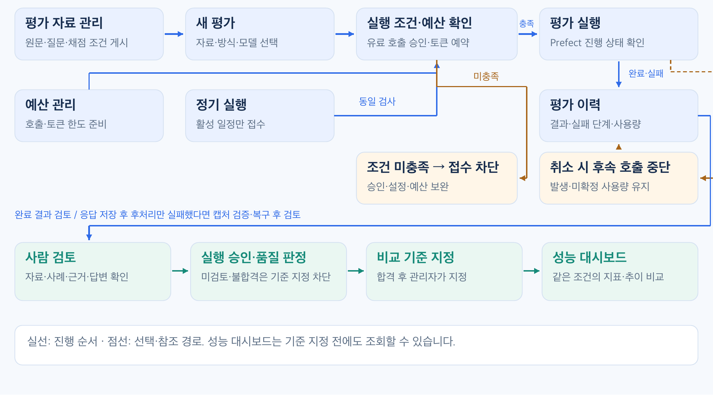
목적에 맞는 세 가지 평가 경로
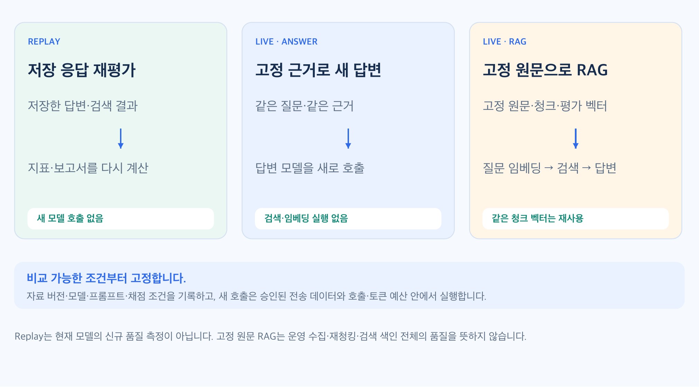
저장 응답 재평가는 당시 응답을 다시 분석합니다. 고정 근거 답변은 같은 근거에서 새 답변을, 고정 원문 RAG는 평가 자료 전용 검색과 새 답변을 비교합니다. 운영 원문 재수집·재청킹·운영 검색 색인 전체의 성능 측정과는 구분합니다.
자동 지표 이후에도 사람의 검토가 필요
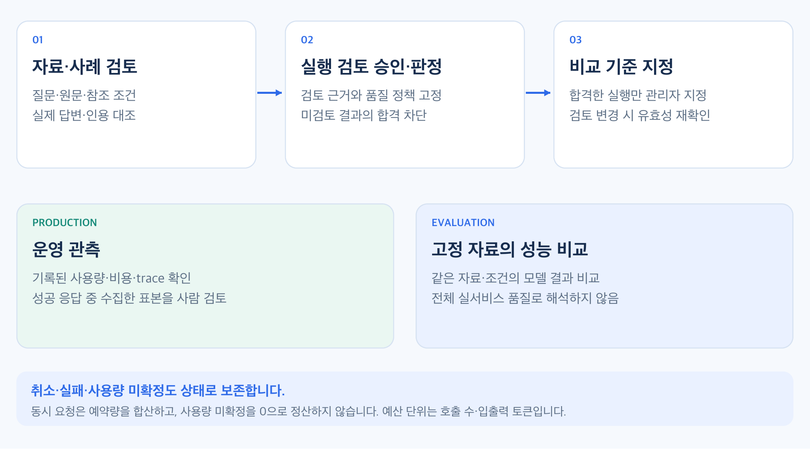
자료·사례 검토 → 실행 검토 승인 → 품질 판정 → 비교 기준 지정을 이력으로 보존합니다. 예산은 호출 수·입출력 토큰으로 예약하고, 취소 후 사용량 미확정을 0으로 정산하지 않습니다.
실제 운영 화면: 실행 추적과 평가 보고서
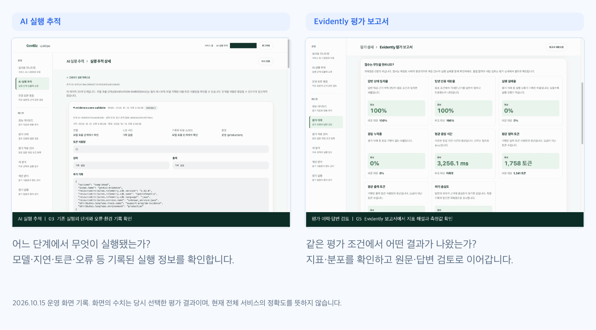
화면은 2026-10-15 운영 기록입니다. 운영 관측은 수집된 호출·trace·표본의 기록, 성능 대시보드는 고정 자료의 평가 결과이며 실서비스 전체 정확도를 나타내지 않습니다. 기존 관리자 로그인 연동은 React Ops 화면에 적용되며 Langfuse·Prefect 자체 UI의 인증은 별도입니다.
구현 근거: Ops 운영 API · 평가 실행 흐름 · 분석·보고서·점수 등록 · 운영 화면 원본
3. AWS EKS·Helm·Argo CD 기반 GitOps
사용자 요청과 배포 제어의 경로를 분리
React 웹은 Vercel, 백엔드·저장소·평가·관측 서비스는 EKS에 배치했습니다. 사용자 API 요청은 CloudFront·내부 ALB·Nginx를 거쳐 Core·Ops로 전달됩니다.
검증에서 배포까지 이어지는 GitOps 흐름
개인 저장소 main의 같은 최신 SHA에 대한 필수 CI를 확인한 뒤 CodeBuild에서 이미지를 만들고, ECR digest와 Helm 배포 YAML·불변 Git 태그를 연결합니다.
Argo CD가 반영하고, 성공 확인 후 웹을 전환
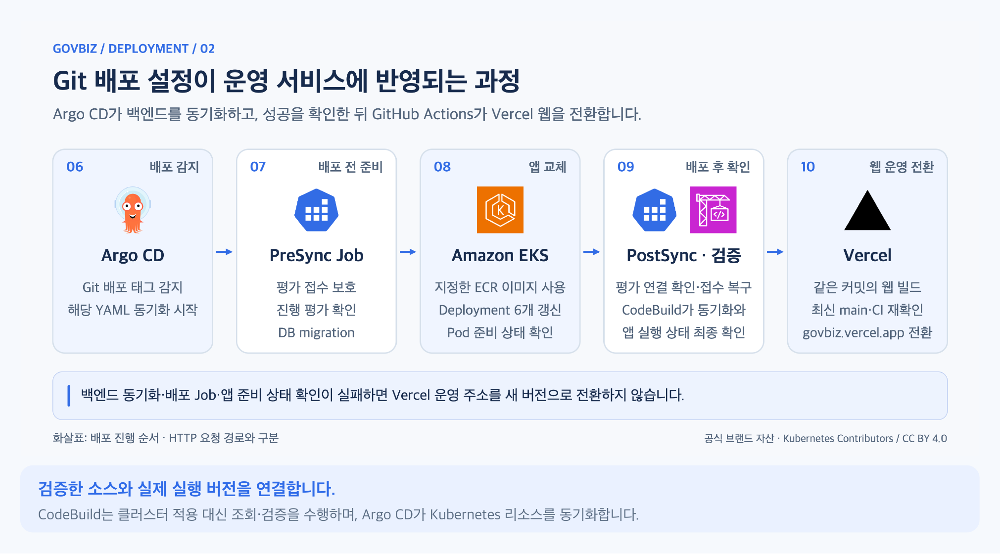
CodeBuild는 클러스터 상태를 조회·검증하고 Argo CD가 Kubernetes 리소스를 동기화합니다. 지정한 리비전·배포 hook·실제 이미지·준비 상태를 확인한 후 같은 소스의 웹을 전환합니다.
실제 Kubernetes 서비스·Pod 배치
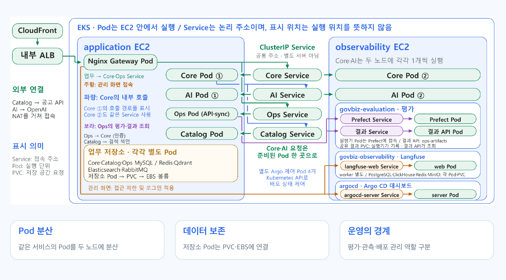
같은 서비스의 Pod를 노드에 분산하고, 영속 데이터는 PVC·EBS gp3로 보존합니다. 단일 AZ 구성이며 다중 AZ 고가용성과는 구분합니다. 문서에 남은 배포 성공 기록과 현재 클러스터 상태도 별개의 근거입니다.
구현 근거: 운영 전체 구성도 원본 · 자동 배포 계약·적용 기록 · 배포 워크플로 · 리비전·hook·이미지 검증
4. Core·Catalog·AI·Ops 마이크로서비스
업무 책임과 데이터 소유권을 함께 분리
Core는 사용자 업무, Catalog는 공고 수집·원본, AI는 모델·검색 실행, Ops는 평가 운영을 소유합니다. Core·Catalog·Ops는 각각의 MySQL을 사용하며, Core는 Catalog DB를 직접 읽지 않습니다.
준비가 끝난 공고만 반영하고 실패 시 기존 자료 보존
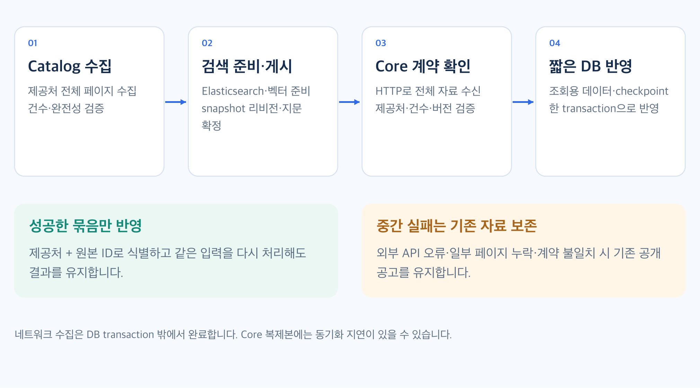
Catalog는 전체 수집과 검색 준비를 마친 snapshot을 게시합니다. Core는 HTTP 수신과 계약 검증을 끝낸 뒤, 짧은 transaction으로 조회용 복제본과 checkpoint를 반영합니다. 제공처 API 오류·페이지 누락·계약 불일치가 있으면 기존 공고를 유지합니다.
구현 근거: 서비스 분리 설계 · Core 반영 흐름 · 현재 서비스 구성
5. React 웹·React Native 앱의 공통 업무 계층
업무 규칙과 응답 검증은 공유, 플랫폼 연결은 분리
공통 패키지에 도메인·유스케이스·API 클라이언트·Zod 응답 검증을 두고, 화면·세션 저장·인증 전송은 각 플랫폼이 담당하도록 설계했습니다.
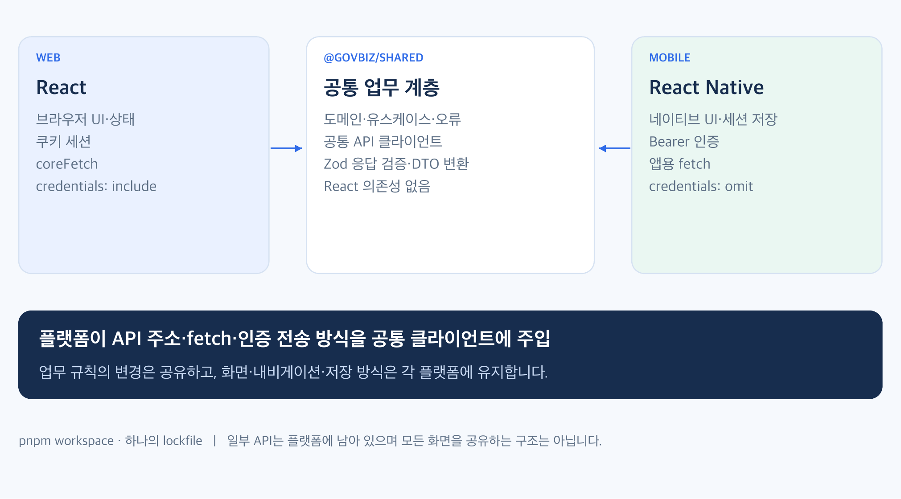
웹은 쿠키 세션과 coreFetch, 앱은 Bearer 인증과 앱용 fetch를 공통 클라이언트에 주입합니다. 공통 패키지는 React에 의존하지 않으며 별도 서버도 아닙니다.
실제 화면: 같은 근거 답변 기능을 웹과 앱에서 제공
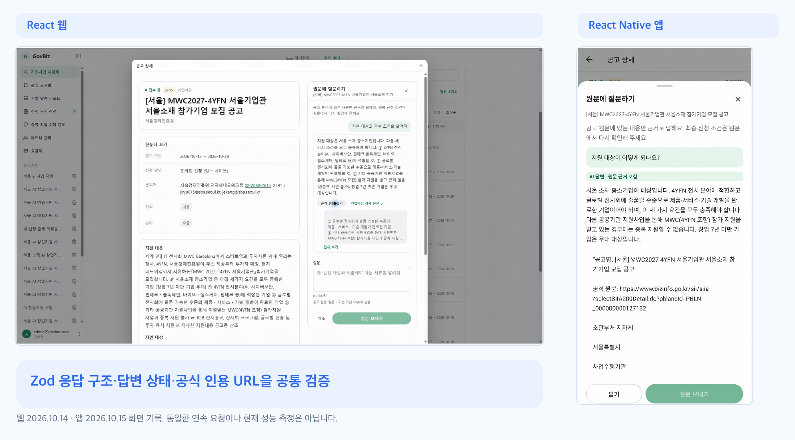
근거 답변의 구조·상태·공식 인용 URL을 공통 경계에서 검사합니다. GovAgent 응답에서는 사용자가 선택한 공고 ID도 대조합니다. 모든 API와 UI가 공유된 것은 아니며, 기기·스토어 배포 검증은 공통 코드·JS 번들 검증과 구분합니다.
구현 근거: 공유 구조 · 공통 API 클라이언트 · 근거 답변 검증 · GovAgent 응답 검증
전체 구성도 참고
README 전체 시스템 아키텍처 펼쳐 보기

시스템 아키텍처에는 PDF의 구조도 7장과 각 그림에 대응하는 설정표가 있습니다. 그림으로 구성 요소의 연결을 보고, 설정표에서 포트·인증·Pod·저장소·배포 조건을 확인할 수 있습니다. 전체 원본은 모든 관계를 한 번에 대조할 때 참고할 수 있습니다.
기술 보고서 PDF
표지·목차와 사용자·관리자 소개, 원본의 구성을 재배치한 상세 아키텍처 7장, 기술별 구현 설명을 담은 24페이지 PDF입니다. 5~11페이지에서 접속·서비스·평가·노드·외부 통신·빌드·배포 구조를 차례로 볼 수 있습니다.